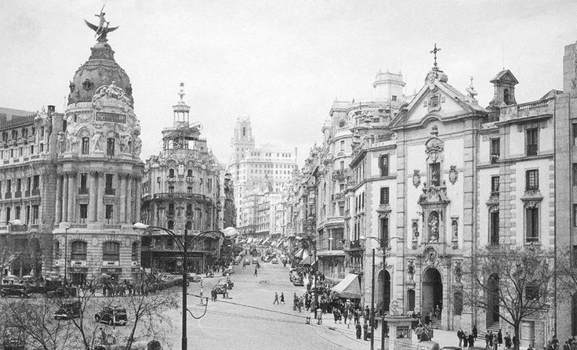

🇪🇸

Madrid
Madrid, España
Sa Madrid, hindi lamang siya nag-aral — siya ay nagising. Nakilala niya ang mga Pilipinong katulad niya: nagutom din, naghirap din, ngunit puno ng pangarap. Sa bawat debate sa Circulo Hispano-Filipino, lalo niyang naramdaman ang init ng apoy na nagbibigay-buhay sa kanyang misyon.
💡 Natutunan ni Rizal:
Na ang boses ng isang Pilipino ay may lakas — kung gagamitin nang tama at maayos.
🔄 Paano siya nagbago:
Mula estudyante, naging aktibistang may layunin. Nagsimula siyang magsulat hindi para sa kanyang sarili, kundi para sa kanyang bayan.